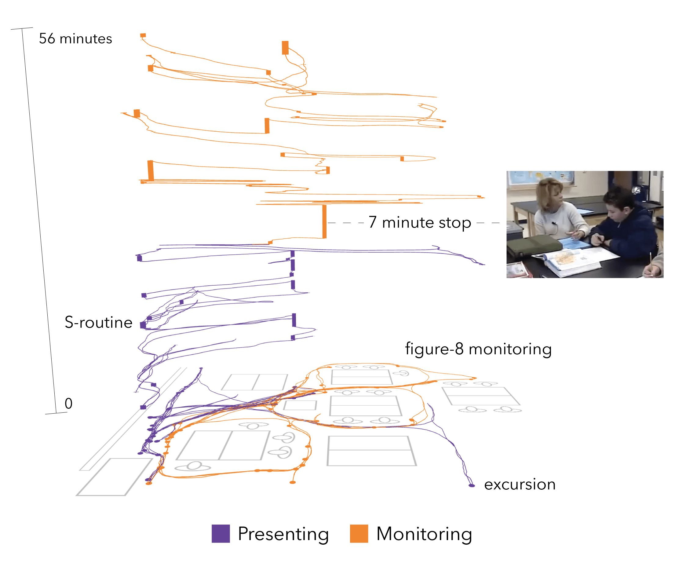

Figure 5. Annotated screenshot from the IGS showing one teacher’s movement in a space-time cube across a 56-minute science lesson in the United States. Path color encodes whether the teacher is presenting information to the class or monitoring individual or groupwork. Video is being played at a moment that occurs during a 7 minute stop at a student desk in the center of the classroom mid-way through the lesson. Annotations mark different phenomena made visible.
